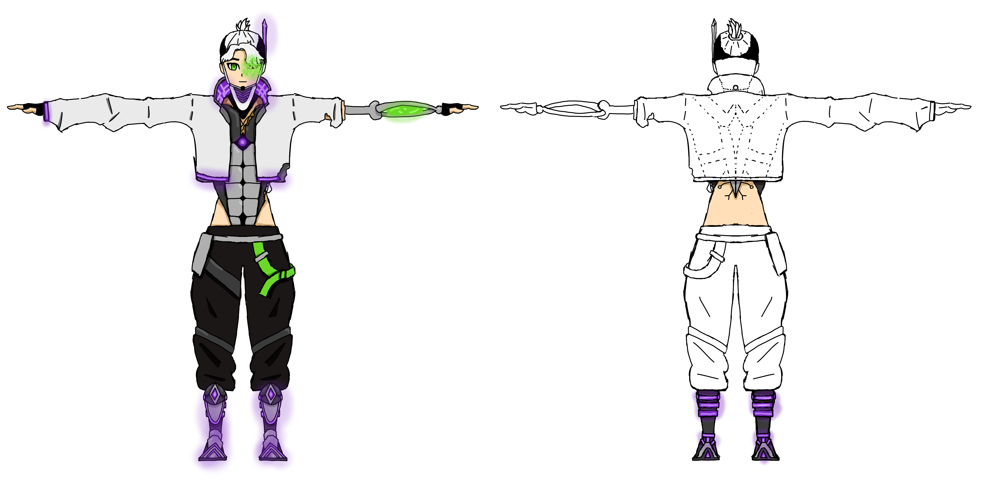

Creacion y modelado de un entorno para una presentacion de un perfume ficticio

Diseño de personaje para la referencia para el posterior modelado del presonaje
Modelado y texturizado de personaje lowpoly para videojuego
Modelado y texturizado de personaje lowpoly para videojuegoCreacion y modelado de un entorno para una presentacion de un perfume ficticioCreacion y modelado de un entorno para una presentacion de un perfume ficticio